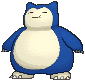

-
Bulbasaur #001

- Grama
- Veneno
Há uma semente de planta em suas costas desde o dia que este pókemon nasce. A semente cresce lentamente.
-
Ivisaur #002

- Grama
- Veneno
Quando o bulbo em suas costas cresce, parece perder a capacidade de ficar pé em suas patas traseiras.
-
Venusaur #003

- Grama
- Veneno
Sua planta floresce quando está absorvendo energia solar. Ele permanece em movimento para buscar luz solar.
-
Charmander #004

- Fogo
Charmander tem uma capacidade, que permite que seus ataques do tipo Fogo cause 150% de dano se a sua saúde fica abaixo de 30%. Como uma habilidade natural, Charmander pode produzir chamas dentro de si e projetá-las de sua boca, o que significa que ele pode respirar fogo. A potência dos seus ataques de chama pode ser medido pelo tamanho da chama na sua cauda.
-
Charmeleon #005

- Fogo
Charmeleon como suas outras formas evolutivas, pode respirar fogo. Seus poderes são muito maiores do que charmander.
-
Charizard #006

- Fogo
Charizard é a ultima evolução de charmander após o charmeleon, charizard é capaz de cuspir fogo como as suas outras formas pré-evoloidas. No entanto, charizard em sua ultima evolução ele se torna um dragão com asas em suas costas.
-
Squirtle #007

- Água
Squirtle tem as capacidade, o que aumenta o poder de seus ataques do tipo água em 150%, se a sua saúde cai para 33% ou abaixo. Squirtle também tem a capacidade natural de atirar água de sua boca, que é onde a maior parte de seus ataques vem.
-
Wartortle #008

- Água
Wartortle é a evolução de squirtle. Ele controla habilmente suas orelhas e cauda peludas para manter o equilíbrio enquanto nada.
-
Blastoise #009

- Água
Blastoise é a ultima evolução de squirtle. Em suas costas tem dois canhões de foguete que disparam jatos de água capazes de perfurar o aço grosso. Ele esmaga seu inimigo sob seu corpo pesado para causar desmaios.
-
Cartepie #010

- Inseto
Caterpie é um Pokémon inseto que se assemelha a uma lagarta verde com uma parte inferior amarela e cauda em forma de lágrima.
-
Metapod #011

- Inseto
Embora envolto em uma casca resistente, o corpo por dentro é macio. Não pode resistir a um ataque duro. Está esperando o momento de evoluir.
-
butterfree #012

- Inseto
- Voador
Butterfly é um Pokémon inseto lepidóptero que se assemelha a uma borboleta vagamente antropomórfica com um corpo roxo. Ele adora o néctar das flores e pode localizar canteiros de flores que tenham até pequenas quantidades de pólen.
-
Pidgey #013

- Normal
- Voador
Muito dócil. Se atacado, muitas vezes chuta areia para se proteger, em vez de revidar.
-
Pidgeotto #014

- Normal
- Voador
Este Pokémon está cheio de vitalidade. Ele voa constantemente em torno de seu grande território em busca de presas.
-
Pidgeot #015

- Normal
- Voador
Este Pokémon voa na velocidade de Mach 2, buscando presas. Suas grandes garras são temidas como armas perversas.
-
Pikachu #016

- Eletrico
Quando vários desses Pokémon se reúnem, sua eletricidade pode aumentar e causar tempestades elétricas.
-
Pichu #017

- Eletrico
Apesar da aparência fofa deste Pokémon, aqueles que querem viver com um devem se preparar para receber seus choques elétricos.
-
Raichu #018

- Eletrico
Se as bolsas elétricas em suas bochechas ficarem totalmente carregadas, ambas as orelhas ficarão eretas.
-
Krabby #019

- Água
Se ele sente o perigo se aproximando, ele se cobre com bolhas de sua boca para parecer maior. Pode ser encontrado perto do mar.
-
Kingler #020

- Água
A pinça maior tem força de 10.000 cavalos de potência. No entanto, é tão pesado que é difícil apontar.
-
Mankey #021

- Lutador
É extremamente rápido para raiva. Pode ser dócil em um momento e se debater no instante seguinte.
-
Primeape #022

- Lutador
Alguns pesquisadores teorizam que Primeape permanece com raiva mesmo quando dentro de uma Pokébola. Ele fica extremamente furioso se sentir que alguém está olhando para ele.
-
Annihilape #023

- Lutador
- Fantasma
Ele imbui seus punhos com o poder da raiva que mantinha escondida em seu coração. Os oponentes atingidos por esses punhos imbuídos serão despedaçados até o âmago.
-
Grimer #024

- Veneno
Sua principal fonte de alimento são os resíduos industriais viscosos das fábricas.
-
Muk #025

- Veneno
É tão fedorento! O corpo de Muk contém elementos tóxicos e qualquer planta murcha quando passa por ele. Está densamente coberto com uma lama imunda e vil.
-
Tauros #026

- normal
Uma vez que aponta para sua presa, ele faz uma carga de cabeça. É famoso por sua natureza violenta.
-
Lapras #027

- Água
Adora cruzar o mar com pessoas e Pokémon nas costas. Ele entende a fala humana.
-
Snorlax #028
- Normal
Ele para de comer apenas para dormir. Ele não se sente cheio a menos que coma cerca de 900 libras por dia.